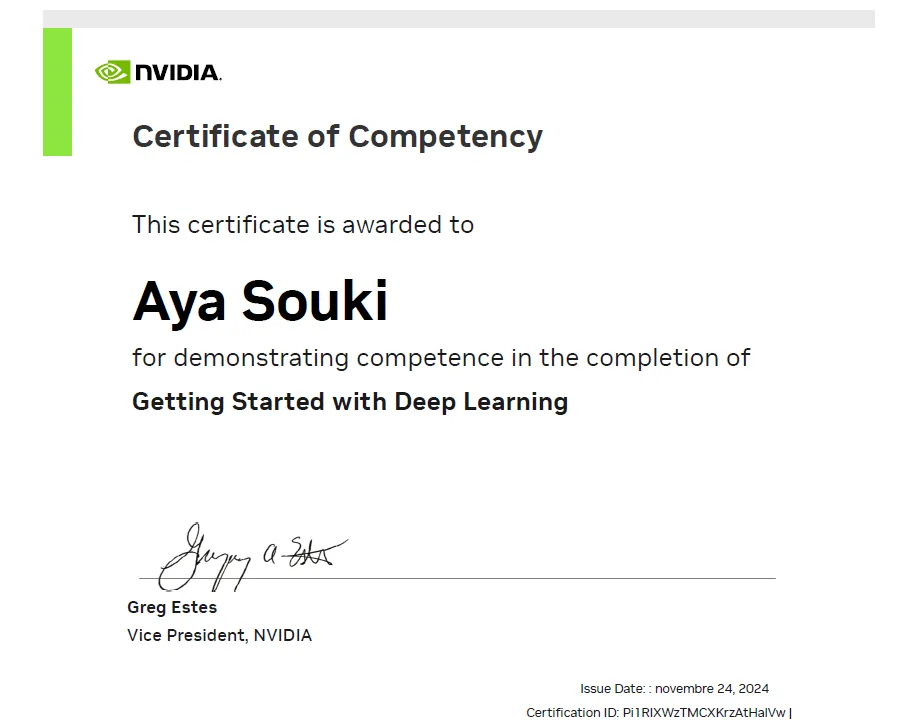
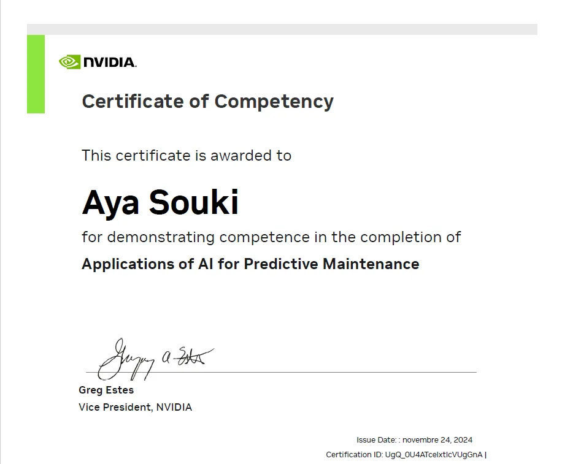

Formation Siemens — Industrie 4.0
Organisme : Siemens
Automatisation avancée, intégration de systèmes, processus industriels intelligents.
Organisme : Siemens
Automatisation avancée, intégration de systèmes, processus industriels intelligents.

Organisme : The Construct
Développement robotique avec ROS, Linux et Python.

Organisme : NVIDIA
Fondamentaux du Deep Learning, CNN et entraînement de modèles.
Voir le certificat (PDF)
Organisme : NVIDIA
Cas d’usage industriels, analyse de données en temps réel.
Voir le certificat (PDF)Organisme : Cisco Networking Academy
Fondamentaux Linux, shell et sécurité.
Voir le certificat (PDF)